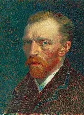
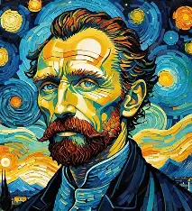
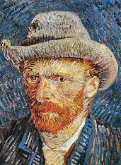
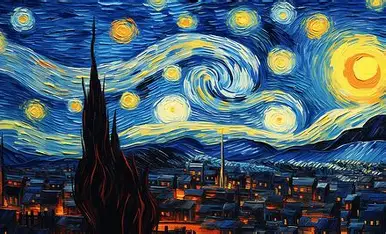
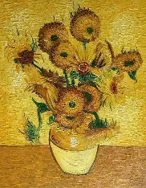
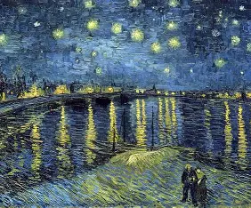

Vincent van Gogh was a famous Dutch painter who was born on March 30, 1853, in Zundert, Netherlands. He is one of the most influential artists in the history of Western art. Van Gogh began painting seriously in his late twenties after working in different jobs, including as an art dealer and a missionary. During his short artistic career, he created more than 2,000 artworks, including around 860 oil paintings. His paintings are known for their bright colours, bold brushstrokes, and emotional style. Some of his most famous works include *The Starry Night*, *Sunflowers*, and *The Bedroom*. Van Gogh struggled with poor mental health throughout his life and died on July 29, 1890, at the age of 37. Although he received little recognition during his lifetime, his artwork became highly influential and celebrated after his death.


